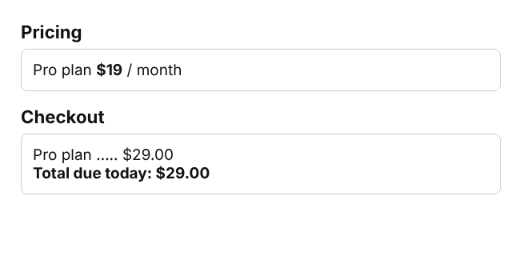

Repaired to pass
The list came back empty, so the agent typed the missing item again and reported success. The bug stays hidden behind a green tick.
KaneJury: spots typing after the last requested action and asks for a strict re-run.
KaneJury reads the evidence behind every Kane CLI run and tells your pipeline what to do next: ship it, fix it, run it again, or look closer. Each decision comes with a receipt anyone can verify.
A browser agent answers "passed" or "failed", and your pipeline acts on it. KaneJury looks at what actually happened in the run before that word is trusted.
The list came back empty, so the agent typed the missing item again and reported success. The bug stays hidden behind a green tick.
The browser died mid-run and the result says "failed". Handed to a coding agent, it sends the agent after a bug that does not exist.
The summary says a button was pressed. The recorded steps have no such click. The verdict rests on an action that never happened.
The coding agent can't make the feature work, so it weakens or deletes the test instead. The run turns green and nothing was fixed.
Plain, deterministic code does most of the work. Three attested vision models add a second look at the screen. The gate turns it all into one action your pipeline can branch on.
Your objective in a real browser, sealed into an evidence pack.
Steps, screenshots, console and network logs, failure records.
Crash or real failure? Every click present? Any repair after the last one?
Three calibrated models in hardware enclaves read the screenshot.
One action, with reasons and a signed receipt.
Passed, and nothing looked wrong. exit 0
A confirmed failure goes to the coding agent. exit 1
Infrastructure trouble. The agent stays out of it. exit 4
Passed, but may have repaired the page. Re-run strict. exit 5
The evidence disagrees with itself. A person looks. exit 5
Pick a real evidence pack from our Kane CLI runs, or drop in your own .evidence file. The same checks and gate as the command line run in your browser, and nothing is uploaded.
This is a saved Kane test. Take its fingerprint, then edit or delete a line the way a coding agent might to get a pass, and check again.
A small todo app where "Clear completed" removes every item. KaneJury runs Kane, gates each result, and calls a real coding model only once the failure is confirmed. Every line below comes from the recorded run log.
Each run has a known right answer from how the page is built. Here is what Kane said, what the vision jury said, and what KaneJury's checks noticed.
| Run | Claim | Known | Kane | Jury | What KaneJury noticed |
|---|
This receipt is real: three attested models judged the screenshot below. Your browser recomputes every hash, recovers each signer from its signature, re-reads each verdict from the signed response, and re-derives which jurors were eligible from their own signed calibration answers. Nothing leaves this page.

Claim: "Price shown at checkout matches the advertised Pro price." The pricing box says $19, checkout says $29. The jury said fail.
Press a button to run every check in your browser.
One decision engine behind four doors, so every surface gives the same answer.
git clone https://github.com/Datwebguy/kanejury && cd kanejury npm install # decide what to do with a Kane run node src/cli.js gate run.evidence # add the vision jury for a claim node src/cli.js judge-pack run.evidence --claim "The cart badge shows 1." # the whole loop: Kane, gate, agent, Kane again node src/cli.js loop --objective "..." --url http://localhost:3000 --agent "node agent.mjs" # check any receipt offline node src/cli.js verify receipt.json --image evidence.png
0 allow1 fix4 rerun5 recheck or review{
"mcpServers": {
"kanejury": {
"command": "node",
"args": ["/path/to/kanejury/src/mcp.js"]
}
}
}kanejury_inspect_packkanejury_gatekanejury_judge_packkanejury_verify_receiptkanejury_guard_snapshotkanejury_guard_check- uses: Datwebguy/kanejury@main
with:
pack: .testmuai/evidence # a file or a folder
fail-on: fix,recheck,reviewReads each evidence pack, writes a job summary with the reasons, and fails the build on the actions you choose.
{ "hooks": {
"UserPromptSubmit": [ { "hooks": [ { "type": "command",
"command": "KANEJURY_OBJECTIVE='...' node /path/to/kanejury/hooks/claude-code-prompt.mjs" } ] } ],
"Stop": [ { "hooks": [ { "type": "command",
"command": "KANEJURY_OBJECTIVE='...' KANEJURY_URL=http://localhost:3000 node /path/to/kanejury/hooks/claude-code-stop.mjs" } ] } ]
} }When you give the agent a task, the tests are fingerprinted. When it says done, Kane tests the change, the gate decides, and the reasons go straight back to the agent. A pass against edited tests is blocked. After three attempts it hands over to a person.
Open source, runs on your machine, and every decision is checkable.